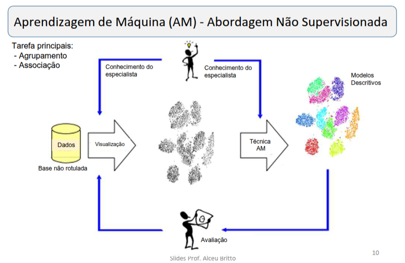

Uma breve introdução ao tema que iremos estudar ao longo desta aplicação.
Não requer dados rotulados.

Requer dados rotulados.
Alternativa quando não temos dados rotulados em quantidade suficiente.
Não precisa de dados de treinamento.
Prediz categorias (ex: spam / não spam)
Prediz valores contínuos (ex: preço)
Modelo interpretável (caixa branca)
// baseado em regras IF-THEN
Baseado na similaridade entre instâncias
// não gera modelo explícito
Baseado em probabilidade (Teorema de Bayes)
// assume independência entre atributos
Separa classes usando hiperplanos
// usa kernels para problemas não lineares
Inspiradas no cérebro humano
// modelo caixa-preta